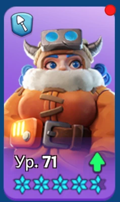
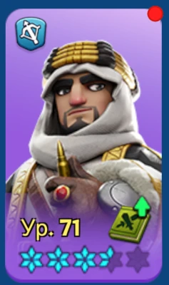

Для игрока
Запускай рейд по своей волне
Старт определяется положением города вокруг Ловушки: 30:00, 29:20, 28:40, 28:00 или 27:20. После удара и возврата войск новый рейд открываем сразу: полный цикл занимает примерно 5:20 плюс несколько секунд на повторный запуск. Не ждём прежние «ровные пять минут» — они математически не помещаются.
При вступлении ставь правильного первого героя
При присоединении базовый первый герой — Джесси или Джассер. Со-Юн используется в отдельных случаях. Первый герой важен из-за своего экспедиционного навыка, поэтому случайного героя по одной только мощности первым не ставим.
Отправляй те войска, которые реально есть
Не держи марш дома ради «идеальной» пропорции. На молодом государстве нормальны неполные и смешанные марши. Важнее, чтобы доступные войска постоянно участвовали в рейдах.
После возврата сразу отправляй войска снова
Выбирай подходящий рейд, который отправится раньше. Не жди несколько минут конкретного сильного лидера, если другой нормальный рейд уйдёт заметно раньше.
Заполняй все доступные маршевые очереди
Если у тебя открыто шесть маршей, все 6 можно держать в чужих рейдах. Твой собственный рейд на Медведя идёт отдельным системным слотом, поэтому его запуск не уменьшает число доступных присоединений.
Если сила невысокая — выгоднее не открывать свой рейд
Слабый собственный рейд забирает твой основной марш и часть участников. Нередко эти же войска принесут больше очков, если постоянно отправлять их в рейды более сильных игроков.
Если в волне мало запусков — можно подстраховать
Если видишь, что в какой-то минуте открыто заметно меньше рейдов, опытный игрок может запустить свой рейд вне своей волны. Делай так только если понимаешь схему и не создашь лишнюю очередь или провал в своей основной волне.
Герои при присоединении к рейду
Кого ставить первым при присоединении
Первый герой даёт рейду свой экспедиционный навык. Второй и третий герои при присоединении дают только размер марша и ничего более — их навыки рейд не усиливают.


Джеронимо — донатный герой и не привязан к возрасту сервера. Мия и Филли становятся доступны по мере развития сервера.
Волны и круги вокруг Ловушки
| Где стоит город | Первый запуск | Ориентиры следующих запусков |
|---|---|---|
| 1-й круг · левая половина | 30:00 | ≈ 24:40 → 19:20 → 14:00 → 8:40 |
| 1-й круг · правая половина | 29:20 | ≈ 24:00 → 18:40 → 13:20 → 8:00 |
| 2-й круг · левая половина | 28:40 | ≈ 23:20 → 18:00 → 12:40 → 7:20 |
| 2-й круг · правая половина | 28:00 | ≈ 22:40 → 17:20 → 12:00 → 6:40 |
| Все остальные лидеры | 27:20 | ≈ 22:00 → 16:40 → 11:20 → 6:00 |
Если город стоит ровно на условной границе левой и правой половины, офицер заранее относит его к одной из соседних волн. Время после первого запуска — ориентир: фактически жмём новый рейд сразу после возврата войск, поэтому каждый следующий запуск может сдвигаться на несколько секунд.
Для офицера
Почему именно пять волн
Сбор рейда занимает ровно 5:00, дорога до Медведя — около 0:10, возврат — ещё около 0:10, а повторный запуск требует нескольких секунд. Поэтому реальный цикл одного лидера — примерно 5:20–5:25, а не пять минут. Чтобы каждый лидер сохранил возможность нанести 5 собственных ударов, первый рейд должен быть открыт примерно до 27-й минуты. Мы распределяем пять групп равномерно внутри безопасного стартового окна: каждые 40 секунд от 30:00 до 27:20.
Как организовать альянс
1. Разметьте пять волн
Первый круг делится на левую и правую половины, второй круг — так же. Остальные подходящие лидеры составляют пятую волну. Первые запуски идут с шагом 40 секунд: 30:00 → 29:20 → 28:40 → 28:00 → 27:20.
2. Слабым игрокам лучше быть участниками
Если собственный рейд игрока заметно слабее рейдов основных лидеров и забирает большую часть его войск, эффективнее вообще не запускать его и использовать все марши для присоединения.
3. Разнесите сильных лидеров
География — основа, но если несколько сильнейших игроков случайно попали в одну волну, их можно вручную разнести по разным минутам.
4. Не создавайте шестую волну
Если дальних лидеров слишком много, часть переводится только в участники. Шестая волна съедает безопасное стартовое окно и повышает риск, что поздние лидеры потеряют пятый удар.
Почему важен первый герой участника
При присоединении к чужому рейду бонус даёт только экспедиционный навык первого героя. Второй и третий герои увеличивают только размер марша. Для раннего государства правило короткое: Джесси и Джассер — базовые варианты, Со-Юн — ситуативный. Также можно использовать Мию, Филли и Джеронимо; Джеронимо — донатный герой и не привязан к возрасту сервера.
Что контролировать во время события
- Каждая из пяти групп держит свой первый старт и затем запускается сразу после возврата войск.
- Сильные лидеры не скопились в одной волне.
- Участники ставят правильного первого героя.
- Марши не стоят дома без причины и не ждут несколько минут «идеального» рейда.
Что не нужно администрировать
- Персональные маршруты каждого марша.
- Таблицу «кто к кому идёт» на каждый цикл.
- Обязательные идеальные пропорции войск для молодого государства.
- Собственный рейд каждого игрока только ради самого факта запуска.